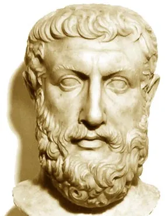

|  | Parmênides foi o principal filósofo da Escola Eleata |
| e um forte defensor do monismo e do imobilismo no mundo | |
| antigo. Suas ideias influenciaram, especialmente, Platão. | |
| Para Parmênides, era dotado de existência somente aquilo | |
| que existe infinitamente e de maneira imóvel,ou seja somente | |
| por meio das essências. A essência é o que aponta o ser | |
| existente em algo ou alguém. Essa essência é fixa,eterna | |
| e imutável, e as mudanças que percebemos nas coisas são, | |
| na realidade, fruto de nossos sentidos enganosos. | |
| Vídeo no Canal Original |